1. 这个游戏的起源已不可考，但它最早可能是在20世纪90年代末或21世纪初的《游戏》杂志上出现的（尽管杂志社的人回复我说没有听过）。2009年，一款名为Tic-Tac-Ku的木制棋盘游戏获得了门萨俱乐部颁发的一个奖项。也许这款游戏同时被多人独立发现，就像舞蹈或微积分一样。
2. 2012年，当我第一次在奥克兰特许高中向学生们展示这款游戏时，他们将它命名为“终极井字游戏”。我在2013年写的一篇博客文章中用了这个名字，似乎是从那以后，维基百科、一些学术论文和很多手机应用程序都用了这个游戏名。毋庸置疑的是：亲爱的学生们，是你们命名了这个游戏，这太值得骄傲了！
3. 这里要感谢迈克·桑顿（Mike Thornton），他读了本章的初稿后也提出了这个问题。迈克的编辑就像莱昂纳德·科恩的歌曲创作或海明威的散文一样——我早就知道很棒，但随着年龄的增长，我对它们的欣赏有增无减。
4. 其中的关键思想是，扁的矩形周长大得不成比例，而方的矩形面积大得不成比例。所以要选择一个细长的矩形（如10×1）和一个方的矩形（如3×4）。
5. 如果你希望矩形的边长全是整数，那么这个问题将非常有趣。下面是我推导出的一个公式，它可以生成无穷多个解。
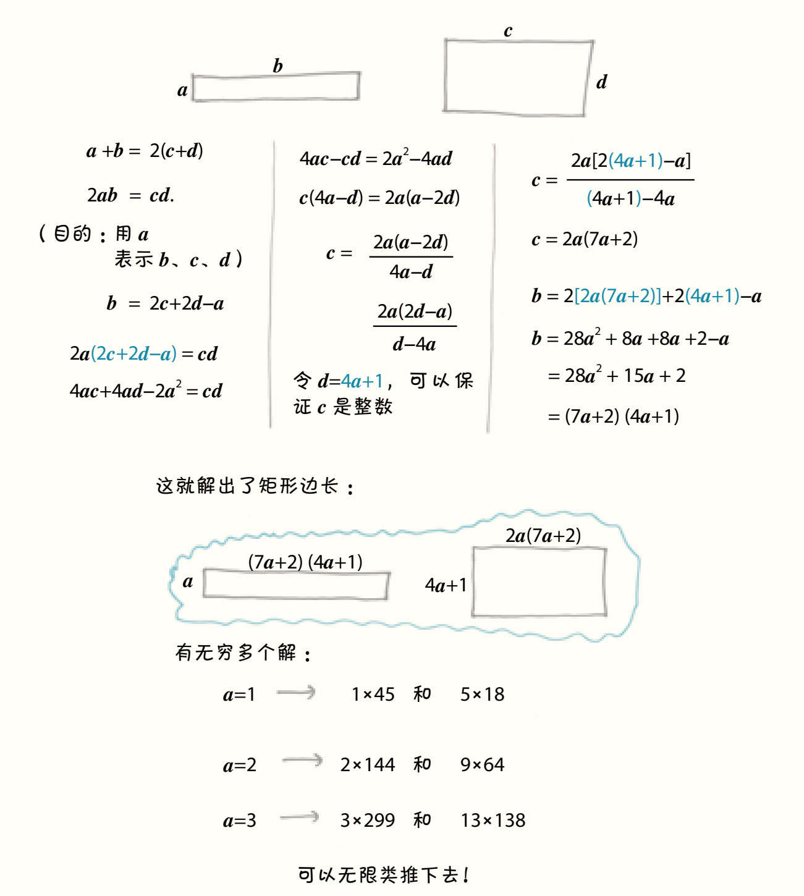
以上的推导给出了无穷个解，但并不是全部的解，因为还有其他的d取值方式可以保证c为整数。例如，这个推导就漏掉了我最喜欢的解：1×33和11×6。我的同事蒂姆·克罗斯（Tim Cross）擅长解不定方程（Diophantine equation），他向我展示了一种可以描述所有可能整数解的绝妙方法。不过，按照数学领域的“优良传统”，我打算把它作为一个“读者习题”，试试看吧。
6. 实际的策略有点儿过于复杂，无法在此描述，但你可以在可汗学院（Khan）的网站上看到具体方法。
7. 完整的故事请看：Simon Singh, Fermat's Last Theorem (London: Fourth Estate Limited, 1997)（中文版：《费马大定理：一个困惑了世间智者358年的谜》，［英］西蒙·辛格著，薛密译，广西师范大学出版社，2013年）。
8. 这句话出自唯一一本我为了消遣而读的词典： 大卫·威尔斯（David Wells），《稀奇有趣数字的企鹅词典》（The Penguin Dictionary of Curious and Interesting Numbers），伦敦：企鹅出版社（London: Penguin Books），1997年。
1. 说实话，我更喜欢《饥饿游戏》。
2. 迈克尔·珀山（Michael Pershan）是世界上最好奇、分析能力最强的人，在我还没有想到之前，就已经组织好了“策略”的概念。感谢他对这一章的帮助。
3. 在www.geogebra.org/m/WFbyhq9d上有很棒的动画解释。
1. 我和一位数学家结婚五年了。幸运的是，到目前为止，她似乎还记得我。
2. 详见Matt Parker, Things to Make and Do in the Fourth Dimension (London: Penguin Random House, 2014)（中文版：《我们在四维空间可以做什么》，［澳］马特·帕克著，李轩译，北京联合出版公司，2020年）。
3. 感谢马修·弗朗西斯（Matthew Francis）和安德鲁·斯泰西（Andrew Stacey）在这一知识点上的帮助。我本想说宇宙的基本结构是“双曲线”或“椭圆”，而不是“欧几里得平行线”，但他们告诉我真实的图景更不可思议，是由这些更简单的几何图形拼接而成的。
斯泰西说：“黎曼几何在许多方面扩充了欧几里得几何的适用性，还丰富了欧几里得几何，可是也丢失了一部分内容，主要是关于描述空间中不同点之间的关系的内容。”这包括“平行”的概念。
弗朗西斯补充了一个有趣的历史细节：“威廉·金顿·克利福德在19世纪提出用非欧氏几何来代替力，但他除了‘这会简洁很多’之外没能说出更多的理由。如果其他人也有类似的想法，我也不会感到惊讶的。”爱因斯坦当然会与数学家密切合作。没有任何突破是孤立发现的。
4. 请见描述这个故事的图像小说：Apostolos Doxiadis et al, Logicomix: An Epic Search for Truth (New York: Bloomsbury, 2009)（中文版：《罗素的故事》，［希］多西亚蒂斯，［希］帕帕蒂米图奥著，傅志红译，人民邮电出版社，2011年）。
5. 请见：James Gleick，The Information: A History, a Theory, a Flood (New York: Knopf Doubleday, 2011)（中文版：《信息简史》，［美］詹姆斯·格雷克著，高博译，人民邮电出版社，2013年）。这本书很精彩，这个有趣的故事在原文第113页。
6. 尤金·魏格纳，《数学在自然科学中不合理的有效性》（The Unreasonable Effectiveness of Mathematics in the Natural Sciences），1959年5月11日理查德·柯朗特在纽约大学的数学科学课程（Richard Courant lecture in mathematical sciences delivered at New York University, May 11, 1959），《纯数学与应用数学交流》（Communications on Pure and Applied Mathematics），1960年13期，1—14页。这是一篇意义重大的文章。
1. 在这一章中，我的老师是大卫·克隆普（David Klumpp），他兼具了卡尔·萨根渊博的学识和温柔的性格，简直就是卡尔·萨根本人。
2. 伊斯雷尔·克莱纳（Israel Kleiner），“艾米·诺特与抽象代数的出现”（Emmy Noether and the Advent of Abstract Algebra），《抽象代数的历史》（A History of Abstract Algebra），波士顿：博克豪斯出版社（Boston: Birkhäuser），2007年， 91—102页。我对这个论点进行了激烈的反驳，关键的论据是分析和几何在19世纪有了巨大的进步，而代数仍然处于一种更加具体和原始的状态。
3. 华金·纳瓦罗（Joaquin Navarro），《数学中的女性：从希帕蒂娅到艾米·诺特——一切都是数学的》（Women in Maths: From Hypatia to Emmy Noether. Everything is Mathematical），西班牙：R.B.A.精品出版股份公司（Spain: R.B.A. Coleccionables，S.A.），2013年。
4. 这是格蕾丝·谢弗·奎因（Grace Shover Quinn）教授说的，摘自马洛·安德森（Marlow Anderson）、维克多·卡茨（Victor Katz）和罗宾·威尔森（Robin Wilson），《谁给了你ε？以及数学史上的其他故事》（Who Gave You the Epsilon? And Other Tales of Mathematical History），华盛顿哥伦比亚特区：美国数学协会（Washington, DC: Mathematical Association of America），2009年。
5. 所有关于西尔维亚·瑟法蒂的故事都出自一篇关于她的采访报道：西沃恩·罗伯茨（Siobhan Roberts），“在数学中，‘你不会被骗’”（In Mathematics, "You Cannot Be Lied To"），《量子》杂志（Quanta Magazine），2017年2月21日。这位作者笔下的数学就像R.E.M乐队最热门的专辑一样，非常值得推荐。
6. 科林·麦克拉蒂（Colin McLarty），《上升的海洋：格罗滕迪克谈简单与普遍》（The Rising Sea: Grothendieck on Simplicity and Generality），2003年5月24日。
7. 娜塔莉·沃尔奇欧芙（Natalie Wolchover），“找寻已久的证据，几乎失而复得”（A Long-Sought Proof, Found and Almost Lost），《量子》杂志，2017年3月28日。就算你已经被我剧透过，这个故事读起来依然很棒。
8. 法尔哈德·里亚希（Farhad Riahi，1939—2011）。
9. 科里是化名，但维亚内不是。我认为她值得那些掌声。为了故事的完整性，我添加了一些对话，但这就是我的真实经历。
10. 这一段来自吴宝珠在2016海德堡奖得主论坛（HLF）的新闻发布会上的发言。非常感谢优秀的韦德·格林（Wylder Green）和HLF团队让我有机会到场参加这个新闻发布会。
1. 正五边形的内角是108°。如果你试着在同一个顶点处拼接3个角，就会发现还剩下36°，这样没有足够的空间放置第四个角。可以平铺成平面的规则多边形只有等边三角形（内角60°）、正方形（内角90°）和六边形（内角120°），因为需要能整除360°的角。
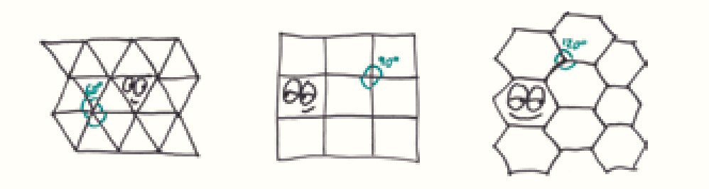
2. 当然，几何也是有一些灵活性的。文中，我使用的是欧几里得关于平行的假设；你可以再另外自创一个假设，但一旦你这么做了，其他所有的规则都会为遵循逻辑上的必要性而改变。
为什么要把这个重要的警告放在容易被忽略的尾注里呢？好吧，我想任何一个挑剔到质疑我们是否在欧几里得空间的人，都会阅读尾注的。
1. 这一章的主要资料源于Mario Salvadori, Why Buildings Stand Up (New York: W. W. Norton, 1980)（中文版：《建筑生与灭：建筑物如何站起来》，［美］马里奥·萨瓦多里著，顾天明、吴省斯译，天津大学出版社，2007年）。如果没有这本书，这一章的内容就没有坚实的理论和背景知识基础。此外，我还要感谢思想和运动导师威尔·王（Will Wong）对这一章的帮助。
2. 关于埃及拉绳人的故事，来自：基蒂·弗格森（Kitty Ferguson），《毕达哥拉斯：他的生命和理性世界的遗产》（Pythagoras: His Lives and the Legacy of a Rational Universe），伦敦：标志出版社（London: Icon Books），2010年。
3. 这种几何体是被截断的金字塔，侧面为梯形。很多人都没听过这个词。
4. 维基百科列出了金字塔内部的三个通道（下降的、上升的、水平的）和三个墓室（法老的墓室、王后的墓室、大画廊）的尺寸。这些空间的体积总计为1 340立方米，在整个建筑物260万立方米的总体积中约占0.05%。我把这个数字四舍五入到0.1%，然后（再次感谢维基百科）乘以帝国大厦的体积（280万立方米），得到帝国大厦体积的0.1%为2 800立方米。用这个体积除以单层的面积（大约是7 400平方米），最后得到的高度是38厘米，大约15英寸，我又将这个高度取为2英尺。不过，就在我完成这份书稿时，考古学家又发现了一个隐藏的墓室！但我的四舍五入正好能弥补一些误差。
5. 这里的论点是从萨瓦多里的《建筑生与灭》中偷来的，当然没有照搬原文。
6. 除了泰德·莫斯比（Ted Mosby）。他是美剧《老爸老妈浪漫史》（How I Met Your Mother）的主角，职业是建筑师。
7. 依然是从萨瓦多里那儿引入的概念。正如威尔·王所言，传统的描述会更侧重于“工”字形横截面所产生的理想特性（分散应力、减小扭矩等）。
8. 我对桁架的了解来自人类伟大的创造——维基百科。更多信息请查看维基百科“Truss”和“Truss Bridge”词条的介绍。
1. 感谢卡洛琳·吉尔洛（Caroline Gillow）和詹姆斯·巴特勒（James Butler），二位宽广的胸怀让大西洋也相形见绌，感谢他们在这一章中的帮助和鼓励，感谢他们让我“搬到英国”的经历变得如此美妙。
2. 就在亚当创造名词“反整数”的同一天，我向一位名叫哈里的11岁学生打招呼说：“你好，algebraists（代数学家）！”他的回答是：“为什么不叫我们alge-zebras（袋鼠学家）呢？”我说得没错吧，当老师太有趣了。
3. 另一个超棒的地方是A1纸的面积是精确的1平方米，每小一个尺寸，纸的面积正好缩减一半。因此，理论上8张A4纸可以精确地拼成1平方米（当然实际上也没那么精确……毕竟长宽比是无理数）。
1. 在写这一章时，我的同事理查德·布里奇斯（Richard Bridges）告诉我，他读过一篇很棒的相关文章。我从那篇80年前的文章中摘录了部分内容：J. B. S.霍尔丹（J. B. S.Haldane），《尺寸要合适》（On Being the Right Size），1926年3月。
2. 此处忽略了高度，因为在烤布朗尼的时候，我们不能把烤盘装满。
3. 这是我从基蒂·弗格森的《毕达哥拉斯》一书中读到的故事。就像所有精彩的寓言故事一样，它很可能是杜撰的。
4. 感谢约翰·考恩（John Cowan）对这一章进行了事实核查，并以最友好、温和的方式补充道：“事实上，罗德岛的巨像就像自由女神像一样，是中空的。外部由铜板拼接而成，内部有铁架加以支撑。因此，当高度增加至n倍时，成本只增加至n2倍。”当然，对可怜的卡瑞斯来说，还是太多了。
5. 我上大学时，在劳里·桑托斯（Laurie Santos）的心理学课程“性、进化和人性”中学到了这一点。当然，当时我已经知道世界上不存在巨人，但桑托斯教授对原因的解释（现在我看来可能是参考了霍尔丹的观点）启发我写了这一章。
6. 请给你们的参议员打电话，敦促他们在为时已晚前为有关道恩·强森的基础建设大力投资。
7. 空气阻力的数学基础与另一个简短的寓言相关：“为什么大帆船需要更巨大的帆。”当你将船的尺寸翻倍时，帆的面积（2D）会翻四倍，但船的重量（3D）会翻八倍，单位重量受风的推力按相应比例减少了。因此，一艘船增长至两倍时，需要大约三倍高的帆。
8. 约翰·考恩补充说：“蚂蚁还有个特点是不会流血，因为它们太小了，所以整个身体都是‘表面’，不需要体液将氧气输送到内部。对于表面比重大的生物而言，扩散作用就已经足够了。”
9. 这个小插曲的灵感来自一位绰号叫“粉笔脸”（The Chalkface）的数学老师。
10. 这里有一些不适合放在正文中的例子。
（1） 为什么大型的热气球更划算？因为所需的帆布取决于表面积（2D），而气球得到的升力取决于氦气的体积（3D）。
（2） 为什么火鸡比鸡需要的烹饪时间更长？因为热量的吸收速度随表面积（2D）的增加而增加，但所需的热量随体积（3D）的增加而增加。
（3） 为什么干的小麦百分之百安全，而小麦粉末却暗藏爆炸危险？因为可燃物被引燃后是从表面开始燃烧的，而微小的粉末的表面积比完整的麦秆大得多，在迅速燃尽后的短时间内产生巨大能量，引起爆炸。
11. 我第一次了解奥伯斯佯谬（Olber's paradox）悖论是在彼得·范·多库姆（Pieter van Dokkum）的天文学课程“星系与宇宙学”中。
12. 这是我最后一次提到约翰·考恩的补充：“如果在我们和恒星之间存在黑暗的天体（行星、尘埃等）呢？难道不会挡住一些恒星，从而消除这个悖论吗？答案是不会，因为随着时间的推移，在黑暗天体背后的恒星会将它们加热到与恒星相同的温度，最终还是会消除所有的黑暗。”
13. 埃德加·爱伦·坡，《我发现了——一首散文诗》（Eureka: A Prose Poem），纽约：G. P.普特南出版公司（New York: G. P. Putnam），1848年。
1. 本章中的史实有三个资料来源，在这里大致按引用量从多到少列出来：
（1） Deborah J. Bennett, Randomness (Cambridge, MA: Harvard University Press, 1998)（中文版：《随机性》，［美］黛博拉·J.本内特著，严子谦、严磊译，吉林人民出版社，2001年）。
（2） “滚动的骨头：骰子的历史”（Rollin' Bones: The History of Dice），Neatorama博客，2014年8月18日。再版于《不会沉水的约翰叔叔浴室读物》（Uncle John's Unsinkable Bathroom Reader）一书。http://www.neatorama.com/ 2014/08/18/Rollin-Bones-The-History-of-Dice/.
（3）马丁·加德纳（Martin Gardner），“骰子”（Dice），《数学魔法秀》 （Mathematical Magic Show），华盛顿，哥伦比亚特区：美国数学协会，1989年，251—262页。
2. 扭棱锲形体有两个表兄弟，它们的每个面都是等边三角形，但都不是公平的骰子。三侧锥三角柱（triaugmented triangular prism），劳伦斯·拉克姆（Laurence Rackham）为我指出；双四角锥反角柱（gyroelongated square），蒂姆·克罗斯和彼得·奥利斯（Peter Ollis）为我指出。如果你更喜欢四边形，还有伪鸢形二十四面体（pseudo-deltoidal icositetrahedron），亚历山大·穆尼兹（Alexandre Muniz）向我展示过。
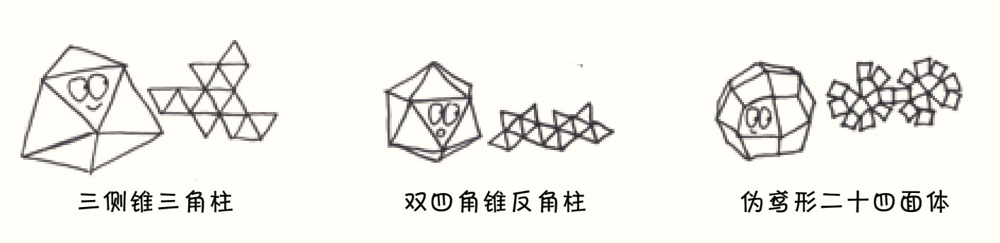
3. 说句公道话，还是有一些例子证明它们的流行性的。古印度人投掷的就是由黏土制成的三边柱骰子，与他们同时代的印第安人也用过象牙雕刻的三边柱骰子。
4. 这也许解释了为什么我见过的所有现代长骰子要么很小，要么是扭曲的，以便让长的那一面保持相等，更好地翻滚起来。骰子实验室（Dice Lab）的研究为本章的写作提供了灵感，并提供了一些很好的例子。
5. 关于这条论证的更多信息，请见：佩西·戴康尼斯（Persi Diaconis）和约瑟夫·B.凯勒（Joseph B. Keller），“公平骰子”（Fair Dice），《美国数学月刊》（American Mathematical Monthly），1989年4月，第96卷第4期，337—339页，http://statweb.stanford.edu/~cgates/PERSI/papers/fairdice.pdf。
6. 尽管如此，还是有一些古代文明采取了类似的做法。古因纽特人投掷椅子形状的象牙骰子，他们只数六面中的三面。托赫诺奥哈姆人（Tohono O'odham）投掷野牛的骨头，只数四面中的两面。
7. 关于那些作弊中巧妙而邪恶的细节，参见：约翰·斯卡尼（John Scarne），《斯卡尼的骰子游戏（第8版）》（Scarne on Dice, 8th ed.），加利福尼亚查特斯沃斯：威尔希尔出版公司（Chatsworth, CA: Wilshire Book Company），1992年。
8. 音乐剧《红男绿女》（Guys and Dolls）中的黑帮老大朱尔也使用了一种类似的含蓄而优雅的方法。他的幸运骰子是空白的，上面没有任何点数。但是别担心，朱尔记得所有点数应该在的位置。
9. 嗯……一般情况下确实不容易。但一个真正的专家会发现不对劲，因为从某些角度来看，这些面的安排和正常的骰子不一样。所以，骗子们会快速移动和替换他们的作弊骰子，以免被看出其中猫腻。
10. 正如无所不知的拉尔夫·莫里森（Ralph Morrison）告诉我的那样，骰子实验室出售的是一个漂亮的120面骰子。更多信息请见：西沃恩·罗伯茨，“你从来不知道自己需要的骰子”（The Dice You Never Knew You Needed），元素专栏（Elements），《纽约客》（New Yorker），2016年4月26日，https://www. newyorker.com/tech/elements/the-dice-you-never-knew-you-needed。
1. 实际上，我从这部作品中得到了很多启发：莱德·温德姆（Ryder Windham）、克里斯·赖夫（Chris Rei%）和克里斯·特列维斯（Chris Trevas），《死星之主的操作手册》 （Death Star Owner's Technical Manual），伦敦：海恩斯出版社（London: Haynes），2013年。我写这一章的部分原因是想博尼尔·谢泼德（Neil Shepherd）一笑，但请你们别告诉他。
2. 如果你喜欢这类故事，我推荐你看看：特伦特·摩尔（Trent Moore），“《星球大战》搞笑‘公开信’中的死星建筑师保卫排气口”（Death Star Architect Defends Exhaust Ports in Hilarious Star Wars "Open Letter"），《科幻线报》（SyFy Wire）， 2014年2月14日，http://www.syfy.com/syfywire/death-star-architect-defends-exhaust-ports-hilarious-star-wars-open-letter%E2%80%99。
3. 在这里我要感谢格里高尔·纳扎里安（Gregor Nazarian），他帮我完善了这一章，让我的心情像约翰·威廉姆斯的音乐一样畅快。（我在这里提到他是因为他建议我用代亚诺加作例子，而不是因为他的脸像代亚诺加）
4. 这些石头和冰的数据出自美国国家航天中心的梅根·休厄尔（Megan Whewell），引述自：乔纳森·奥卡拉汉（Jonathan O'Callaghan），“天体能变成球形的最小尺寸”（What Is the Minimum Size a Celestial Body Can Become a Sphere），《空间答案》（Space Answers），2012年10月20日，https://www.spaceanswers.com/deep-space/what-is-the-minimum-size-a-celestial-body-can-become-a-sphere/。不过银河帝国钢铁的数据是我瞎说的。
5. 我查到的数据从120千米到150千米不等。
6. 我找了又找，想找到一个更现实的数字，但所有来源的数据似乎是一致的。《星球大战》的粉丝们一直在争论“如果两颗死星都爆炸了，一共会有多少人死亡”的问题。温德姆等给出的数据是大约120万人和40万个机器人，维基百科给出的数据是170万人和40万个机器人。为了让我的观点更站得住脚，我用了能找到的最大值。
7. 我不确定是否已经成功地将这个故事没有违和感地塞进《星球大战外传：侠盗一号》的后续中。毫无疑问，某些顽固而令人钦佩的纯粹主义者会对此处的想象力感到不安。另外，我还用2010年西弗吉尼亚州的人口普查数据和这些“遥远的星系”中的角色进行了比对，因此，对死星的建筑理念指手画脚或许不是我最对不起《星球大战》正史的地方。
1. 扎克·奥特（Zac Auter），“半数美国人都买州彩票”（About Half of Americans Play State Lotteries），《盖洛普新闻》（Gallup News），2016年7月22日，http://news.gallup.com/poll/193874/half-americans-play-state-lotteries.aspx。 尽管如此，彩票仍是一种“累退税”，因为当穷人和富人花同样多的钱买彩票时，穷人花的钱占收入的比例更大。
2. 佩奇·迪弗洛（Paige DiFiore），《15个最爱买乐透彩票的州》（15 States Where People Spend the Most on Lotto Tickets），Credit.com，2017年7月13日， http://blog.credit.com/2017/07/15-states-where-people-spend-the-most-on-lotto-tickets-176857/。虽然排名每年都会波动，但自我1987年出生以来，马萨诸塞州一直处于或接近榜首。
3. 这些赔率是从MassLottery.com上找到的，http://www.masslottery.com/games/instant/1-dollar/10k-bonus-cash-142-2017.html。
4. 试试看，奖励1万个玉米圆饼，奖励1万次碰拳，奖励1万只小狗，是不是都很诱人？
5. 其中近一半的中奖者得到的奖金只够支付1美元的彩票费，所以用“没有赔钱”这个词可能比“中奖”更合适。
6. 查尔斯·T.克洛特费尔特（Charles T. Clotfelter）和菲利普·J.库克（Philip J. Cook），“州彩票的经济”（On the Economics of State Lotteries），《经济展望期刊》（Journal of Economic Perspectives），1990年秋季第4期，105—119页，http://www.walkerd.people.cofc.edu/360/AcademicArticles/ClotfelterCookLottery.pdf。
7. 肯特·格罗特（Kent Grote）和维克多·马西森（Victor Mathewson），《彩票经济：一项文献调查》（The Economics of Lotteries: A Survey of the Literature），圣十字学院经济系研究系列论文（College of the Holy Cross, Department of Economics Faculty Research Series），2011年8月，No. 11-09，http://college.holycross.edu/RePEc/hcx/Grote-Matheson_LiteratureReview.pdf. 此外，非常感谢维克多·马西森抽时间阅读本章。
8. 亚历克斯·贝洛斯（Alex Bellos），“从数学上看，现在是玩彩票的最佳时机”（There's Never Been a Better Day to Play the Lottery, Mathematically Speaking），《卫报》（Guardian），2016年1月9日，https://www.theguardian.com/science/2016/jan/09/national-lottery-lotto-drawing-odds-of-winning-maths。
9. 维克多·马西森和肯特·格罗特，《在彩票中寻找公平的赌注》（In Search of a Fair Bet in the Lottery），圣十字学院经济系研究论文，2004年第105篇，http://crossworks.holycross.edu/econ_working_papers/105/。
10. 例如，1990年，斯蒂芬·克林塞维奇（Stefan Klincewicz）领导的一个财团买下了80%的爱尔兰国家彩票，他的团队最终和其他中奖者分享了头奖，但由于丰厚的小额奖金，他们还是实现了盈利。克林塞维奇告诉记者，他之所以不买英国彩票，是因为它没有那些较小的奖金。资料来源：瑞贝卡·福勒（Rebecca Fowler），“如何在彩票上大赚一笔”（How to Make a Killing on the Lottery），《独立报》（Independent），1996年1月4日，http://www.independent.co.uk/news/how-to-make-a-killing-on-the-lottery-1322272.html。
11. 我第一次看到这个故事是在一本近期最好的数学科普书里：Jordan Ellenberg, How Not to Be Wrong (New York: Penguin Books, 2014)（中文版：《魔鬼数学：大数据时代，数学思维的力量》，［美］乔丹·艾伦伯格著，胡小锐译，中信出版社，2015年）。然后，我顺着这个故事追溯到了三个有趣的旧新闻：（1）“集团投资500万美元对冲彩票赌注”（Group Invests $5 Million to Hedge Bets in Lottery），《纽约时报》（New York Times），1992年2月25日；（2）“该集团在弗吉尼亚州的彩票支付被推迟”（Group's Lottery Payout is Postponed in Virginia），《纽约时报》，1992年3月7日，http://www.nytimes.com/1992/03/07/us/group-s-lottery-payout-is-postponed-in-virginia.html。（3）约翰·F.哈里斯（John F. Harris），“澳大利亚人在弗吉尼亚州彩票中逢凶化吉”（Australians Luck Out in Va. Lottery），《华盛顿邮报》（Washington Post），1992年3月10日，https://www.washingtonpost.com/archive/politics/1992/03/10/australians-luck-out-in-va-lottery/cbbfbd0c-0c7d-4faa-bf55-95bd6590dc70/?utm_term=.9d8bd00915e8。
12. 安妮·L.墨菲（Anne L. Murphy），《17世纪90年代的彩票：投资还是赌博？》（Lotteries in the 1690s: Investment or Gamble?），莱斯特大学（University of Leicester, dissertation research）论文研究，http://uhra.herts.ac.uk/bitstream/handle/2299/6283/905632.pdf?sequence=1。我喜欢17世纪英国彩票的名字，比如“诚实的提议”和“光荣的事业”，它们还可能叫作 “是的，我们知道我们可以骗你，但我们保证不会”。
13. 如果你是那种博览群书、不需要看尾注的人，那么你肯定已经知道我引用的是哪本书了，但我还是要说出来：Daniel Kahneman, Thinking Fast and Slow (New York: Farrar, Straus and Giroux, 2011)(中文版：《思考，快与慢》，［美］丹尼尔·卡尼曼著，胡晓姣、李爱民、何梦莹译，中信出版社，2012年）。
14. 丹尼尔·卡尼曼和阿莫斯·特维斯基（Amos Tversky），“预期理论：风险下的决策分析”（Prospect Theory: An Analysis of Decision Under Risk），《计量经济学杂志》（Econometrica），1979年，第47卷第2期，263页，http://www.princeton.edu/~kahneman/docs/Publications/prospect_theory.pdf。
15. 来自查尔斯·T.克洛特费尔特和菲利普·J.库克。
16. 德雷克·汤普森（Derek Thompson），“彩票：700亿美元的耻辱”（Lotteries: America's $70 Billion Shame），《大西洋月刊》（Atlantic），2015年5月11日， https://www.theatlantic.com/business/archive/2015/05/lotteries-americas-70-billion-shame/392870/.也见于：莫纳·沙拉比（Mona Chalabi），《州彩票占全州收入的百分比是多少？》（What Percentage of State Lottery Money Goes to the State）， FiveThirtyEight网站,2014年11月10日，https://fivethirtyeight.com/features/what-percentage-of-state-lottery-money-goes-to-the-state/。
17. 早在18世纪90年代，法国革命者就认为彩票是君主制国家的剥削行为。但在掌权后，他们也没能果断地废除它。原因很简单：政府需要钱。除了彩票之外，你还有什么办法能把一个惧怕税收的公民变成尽职尽责的纳税人？资料来源：杰拉德·维尔曼（Gerald Willmann），《彩票的历史》（The History of Lotteries），斯坦福大学经济系，1999年8月3日，http://willmann.com/~gerald/history.pdf。
18. 来自查尔斯·T.克洛特费尔特和菲利普·J.库克。
19. 维尔曼，《彩票的历史》。
20. 每花1美元，在宾果游戏中平均赢得0.74美元，赛马平均赢得0.81美元，老虎机平均赢得0.89美元，而州彩票平均赢得0.50美元。资料来源：克洛特费尔特和库克。
21. 来自杰拉德·维尔曼。
22. 格罗特和马西森，《彩票经济》。
23. “彩票”（The Lottery），约翰·奥利弗上周今夜秀（Last Week Tonight with John Oliver），HBO电视台，2014年11月9日。
24. 为什么中年人更热衷于买中奖金额高的彩票？个人猜测，也许是因为中年是做梦想家的最佳时期。年轻人会想象其他的致富之路，老年人已经没有了对财富的热切期盼。而中年人，既成熟——能够意识到没有什么神奇的金融变革即将到来，但又年轻——仍然渴望改变自己的人生。
25. 关于这个话题，最新的完整版讨论请看：布列·兰（Bourree Lam），“彩票中奖者会怎样？”（What Becomes of Lottery Winners?），《大西洋月刊》，2016年1月12日，https://www.theatlantic.com/business/archive/2016/01/lottery-winners-research/423543/。
26. 其中一个案例请见：米尔顿·弗瑞德曼（Milton Friedman）和L.J.萨维奇（L. J. Savage），“涉及风险选择的效用分析”（The Utility Analysis of Choices Involving Risk），《政治经济学杂志》（Journal of Political Economy），1948年8月，第56卷第4期，279—304页，http://www2.econ.iastate.edu/classes/econ642/babcock/friedman%20and%20savage.pdf。
27. 格罗特和马西森，《彩票经济》。
28. 书中的例子改编自克洛特费尔特和库克的文章。
1. 看看这个从2010年4月开始经常发生的典型场景：
基萨（好奇地睁大眼）：内质网里到底发生了什么？
我：不知道，这是一个无法解开的谜，超出了人类的想象。
蒂姆（一板一眼地）：课本上说，蛋白质在内质网中折叠。
我：很明显，蒂姆，我的意思是除此之外。
2. 关于这部分的知识，有一篇比我的书更复杂，但可读性仍然很强的文章：拉兹比·可汗（Razib Khan），《为什么兄弟姐妹的差异各不相同》（Why Siblings Differ Differently），基因表达栏目，探索频道，2011年2月3日， http://blogs.discovermagazine.com/gnxp/2011/02/why-siblings-differ-differently/#.Wk7hKGinHOi。
3. “熵”的概念也建立在同样的逻辑基础上——熵是宇宙混乱程度的度量。
以一堆砖块为例，能让一堆砖块组成一个建筑的方式是很少的，但组成一堆乱石却有许多无趣的、不成章法的方式。随着时间的推移，随机的变化会不断累积，几乎所有的变化都会使原本的安排变得更像一堆“乱石”，而几乎没有任何变化会使其变得更有条理、更像一个“建筑”。因此，时间偏爱混乱胜过理性。
同样，能让食用染料颗粒在水杯一侧聚集的方式也很少，就像所有硬币都抛出了正面朝上的结果那么罕见。但是，让这些粒子或多或少地分散在液体的各个部位的方法却有很多，每一次这样的分散就像是抛出了硬币正面和背面的不同组合。这就是随机过程以不稳定但不可阻挡的方式导致了更大的熵，搅乱了宇宙成分的原因。宇宙偏爱无序，这种偏爱的核心就是无数种组合。
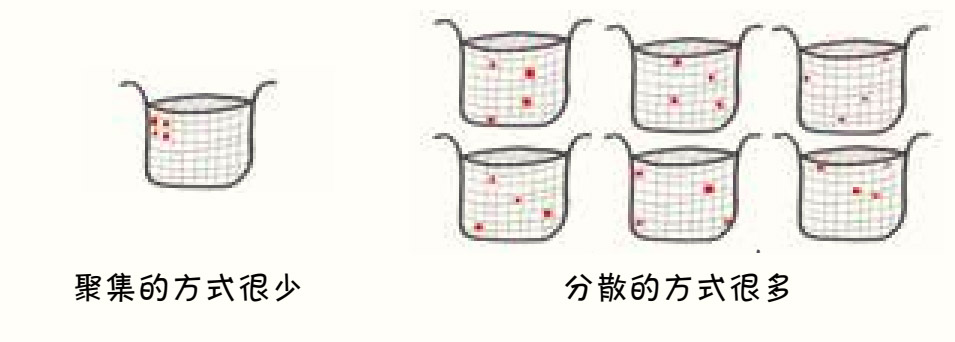
4. 这个概率大约是96%，所以每25个读者中就有一个人会认为我的预言是错误的。话虽如此，如果真的有25个读者抛了46个硬币，那么这本数学书的读者将比我想象的还要硬核。
5. 这里的图表引用自他的作品，详见：https://thegeneticgenealogist.com/wp-content/uploads/2016/06/Shared-cM-Project-Version-2-UPDATED-1.pdf。
x轴的坐标称为“厘摩”（centimorgans），这是科学中最令人困惑的单位（至少对我来说）。“厘摩”是染色体的一小段，在任何一代中，它都有1%的概率被染色体互换打断。你和亲近的亲戚会共享很多厘摩，而和远亲共享的厘摩很少。因此，“共享的厘摩”是一种基因相似度的度量。
到目前为止，一切顺利。但是，因为在整个基因组中发生互换的概率是不同的，所以1厘摩并不是一个恒定的长度。在交叉比较常见的地方，1厘摩比较短；在交叉比较少见的地方，1厘摩很长。最重要的是，不同的DNA测序公司将人类的染色体分成了不同数量的厘摩。而且，100厘摩也并不等于1摩。
更令人困惑的是，当我把这个图中的厘摩换算成百分比时，我发现这个分布的中心不是在50%左右，而是在75%。这是为什么呢？我的妻子解释道：因为商用的DNA试剂盒不能区分实验对象是只有一条染色体还是有两条相同的染色体，这两种可能性都可以算作“匹配”。根据抛硬币的逻辑，一对兄弟姐妹中有50%的DNA是单匹配的，25%是双匹配的，25%则是完全不匹配的。因此，单匹配或双匹配的可能性加起来有75%，所以，分布图的中心在75%。
6. 我找到的数据是1.6，且女性比男性高。不管怎样，我用3倍来计算都严重低估了可能的基因组数，因为（理论上）交换可以发生在DNA序列的任何点上，这增加了无数的可能性。更详细的分析请见罗恩·米罗（Ron Milo）和罗伯·菲利普斯（Rob Phillips），“重组的比率是多少？”（What Is the Rate of Recombination?），《数字细胞生物学》（Cell Biology by the Numbers），http://book.bionumbers.org/what-is-the-rate-of-recombination/。
1. 《思考，快与慢》，丹尼尔·卡尼曼著，胡晓姣、李爱民、何梦莹译，中信出版社，2012年。
2. 想了解更多关于这个结果的信息，请查看自那以后在社交媒体上发布的99.997%的内容。
3. Michael Lewis, Liar's Poker: Rising Through the Wreckage on Wall Street (New York: W. W. Norton, 1989)（中文版：《说谎者的扑克牌：华尔街的投资游戏》，［美］迈克尔·刘易斯著，孙忠译，中信出版社，2018年）。
4. Nate Silver, The Signal and the Noise: Why So Many Predictions Fail—but Some Don't (New York: Penguin Books, 2012), 135–137.（中文版：《信号与噪声》，［美］纳特·西尔弗著，胡晓姣、张新、朱辰辰译，中信出版社，2013年）。
1. 在这一章中，我得到了我曾经教过的10年级学生陈世舟（音译）的极大帮助。这一章最初草稿的标题更大胆，但引语部分的主题不够明确；世舟帮我删减了很多。“那些例子古怪、有趣，但并不是保险的全貌。”她一针见血地说道。
2. 艾美特·J.沃恩（Emmett J. Vaughan），《风险管理》（Risk Management），霍博肯，新泽西：约翰威立国际出版公司（Hoboken, NJ: John Wiley & Sons），1996年，第5页。
3. 穆罕默德·萨迪克·纳兹米·阿夫沙尔（Mohammad Sadegh Nazmi Afshar），“古代伊朗的保险”（Insurance in Ancient Iran），《波斯旅游杂志》季刊4（Gardeshgary, Quarterly Magazine 4），2002年春季第12期，14—16页，https://web.archive.org/web/20080404093756/；http://www.iran-law.com/article.php3?id_article=61。
4. 《彩票保险》（Lottery Insurance），This Is Money网站，1999年7月17日，http://www.thisismoney.co.uk/money/mortgageshome/article-1580017/Lottery-insurance.html。
5. 世舟在这一点上说得很好：在像这样的利基保险市场中，由于竞争更少，利润会比在像牙医保险或家庭保险这样的大市场中更高。
6. 世舟提醒了我：“如果是小企业主，这么做没问题。但如果是大公司，这样就是违法的。会计部门可以把100万美元归入‘保险’项，但不能把5美元归入‘彩票’项。”
7. 劳拉·哈丁（Laura Harding）和朱利安·奈特（Julian Knight），“万一怀了双胞胎，也有一条可依靠的舒适毯子”（A Comfort Blanket to Cling to in Case You're Carrying Twins），《独立报》，2008年4月12日，http://www.independent.co.uk/money/insurance/a-comfort-blanket-to-cling-to-in-case-youre-carrying-twins-808328.html。本章引用的郭大卫的那句话也来自这篇文章。
8. 类似的分析可见：《保险：向数学不好的人征的税？》（Insurance: A Tax on People Who Are Bad at Math?），Mr. Money Mustache博客，2011年6月2日，https://www.mrmoneymustache.com/2011/06/02/insurance-a-tax-on-people-who-are-bad-at-math/。正如作者所言：“各种类型的保险——车险、房险、珠宝险、健康险、人身安全险，等等——是营销、恐惧和怀疑操纵的疯狂领域。”
9. 详情请见http://www.ufo2001.com。我引用的文献为：维基·哈多克（Vicki Haddock），“不用担心外星人威胁”（Don't Sweat Alien Threat），《旧金山观察家报》（San Francisco Examiner），1998年10月18日，http://www.sfgate.com/news/article/Don-t-sweat-alien-threat-3063424.php。
10. 特蕾莎·亨特（Teresa Hunter），“你真的需要外星人绑架保险吗？”（Do You Really Need Alien Insurance?），《每日电讯报》（Telegraph），2000年6月28日， http://www.telegraph.co.uk/finance/4456101/Do-you-really-need-alien-insurance.html。
11. 这些标准是我自己的发明。世舟把她一门本科课程的笔记借给了我，其中“适合投保的特征”和我的略有不同：
（1） “潜在的损失非常大，人们愿意用保费换取保险。”
（2）“损失及其经济价值是明确界定的，不受投保人控制。”
（3）“投保人损失的可能性是相对独立的。”
12. Insurevents（http://www.insurevents.com/prize.htm）和National Hole-in-One（http://holeinoneinsurance.co.uk）这两家公司都提供了这样的保险。
13. 斯科特·迈耶罗维茨（Scott Mayerowitz），《红袜队获胜，沙发免费》（After Sox Win, Sofas Are Free），美国广播公司新闻频道，2007年10月29日，http://abcnews.go.com/Business/PersonalFinance/story?id=3771803&page=1。
14. 具体的保险方案请见：http://www.wedsure.com。
15. 艾米·索恩（Amy Sohn），“你取消了婚礼，现在后果来了”（You've Canceled the Wedding， Now the Aftermath），《纽约时报》，2016年5月19日，https://www.nytimes.com/2016/05/22/fashion/weddings /canceled-weddings-what-to-do.html。
16. 这也有助于扩大你的业务，你还可以做风险顾问。“专业的风险知识也是公司购买保险的原因之一，”世舟告诉我，“拍电影的时候，总会有保险检查员来确保演员的安全。没有他们，电影中会有比我们今天看到的更多疯狂的、毫无意义的爆炸场面。”
17. 奥卢费米·阿亚科亚（Olufemi Ayankoya），《数学与保险业的相关性》（The Relevance of Mathematics in Insurance Industry），2015年2月发表。
18. （美国）全国大学生体育协会网站：《身价降低白皮书：保护未来收益的保险计划》（Loss-of- Value White Paper: Insurance Programs to Protect Future Earnings）， http://www.ncaa.org/about/resources/insurance/loss-value-white-paper。
19. 安迪·斯代普斯（Andy Staples），《人力保险：“身价降低”保险的原理以及流行原因》（Man Coverage: How Loss-of-Value Policies Work and Why They're Becoming More Common），SportsIllustrated.com，2016年1月18日，https://www.si.com/college-football/2016/01/18/why-loss-value-insurance-policies-becoming-more-common。
20. 如雷贯耳吧？来源：威尔·布林森（Will Brinson），“2017职业橄榄球大联盟选秀：杰克·布特加盟野马队，传闻获50万美元保险”（2017 NFL Draft: Jake Butt Goes to Broncos, Reportedly Gets $500K Insurance Payday），CBS体育频道， 2017年4月29日，https://www.cbssports.com/n$/news/2017-nfl-draft-jake-butt-goes-to-broncos-reportedly-gets-500k-insurance-payday/。
21. 关于健康保险的书实在太多了，我推荐Vox新闻的记者萨拉·克里夫（Sarah Kliff）的作品：https://www.vox.com/authors/sarah-kliff。世舟推荐电台节目“This American Life”中的两期，“More Is Less”（第391期）和“Someone Else's Money”（第392期），http://hw3.thisamericanlife.org/archive/favorites/topical。
1. 毫无疑问，这一章最重要的来源是：David Orrell and Paul Wilmott, The Money Formula: Dodgy Finance, Pseudo Science, and How Mathematicians Took Over the Markets (Hoboken, NJ: John Wiley & Sons, 2017)（中文版：《金融方程式：数量金融的应用与未来》，［英］保罗·威尔莫特、［加］戴维·欧瑞尔著，北京大商所期货与期权研究中心有限公司译，机械工业出版社，2018年）。
2. 好吧，其实我的估测更像是“编造随机概率”，但华尔街采用了两种更为严肃的估测方法。一是以历史数据为依据；二是观察类似债券的市场价格并以此推断违约概率。后一种方法会产生令人毛骨悚然的依赖关系和反馈循环：你不是在自己做判断，而是在呼应市场。
3. Michael Lewis, The Big Short: Inside the Doomsday Machine (New York: W. W. Norton, 2010)（中文版：《大空头》，［美］迈克尔·刘易斯著，何正云译，中信出版社，2015年）。如果你更愿意听书，那可以收听电台节目“This American Life”的第355期，“The Giant Pool of Money”（2008年5月9日）。这一期节目在播客“Planet Money”上也能找到。
4. 2017年6月4日，我在比利时的马格利特博物馆看到了这些素描。如果你在布鲁塞尔，又想了解一下超现实主义，推荐你去那儿看看。
5. 这些都是标准的财务术语，由杰西卡·杰弗斯（Jessica Jeffers）指导，我非常感谢她在这一章中的帮助。当我说要选杰西卡当美联储主席时，我发誓我的严肃程度达到了67%。
6. 本章，尤其是本话题中另一个重要的资料来源是：菲利克斯·萨尔蒙（Felix Salmon），“灾难处方：如何杀死华尔街”（Recipe for Disaster: The Formula That Killed Wall Street），《连线》（Wired），2009年2月23日，https://www.wired.com/2009/02/wp-quant/。
7. 也代表“完全（complete）该死的（damn）愚蠢（stupidity）”。
8. 本章的另一个重要资料来源：金融危机调查委员会的基思·亨尼斯（Keith Hennessey），道格拉斯·霍尔茨埃金（Douglas Holtz-Eakin）和比尔·托马斯（Bill Thomas），《异议声明》（Dissenting Statement），2011年1月发表，https://fcic-static.law .stanford.edu/cdn_media/fcic-reports/fcic_final_report_hennessey_holtz-eakin_thomas_dissent.pdf。
9. James Surowiecki, The Wisdom of Crowds: Why the Many Are Smarter than the Few and How Collective Wisdom Shapes Business, Economies, Societies, and Nations (New York: Anchor Books, 2004)（中文版：《群体的智慧：如何做出最聪明的决策》， ［美］詹姆斯·索罗维基著，王宝泉译，中信出版社，2010年）。
10. 《金融方程式：数量金融的应用与未来》，保罗·威尔莫特、戴维·欧瑞尔著，北京大商所期货与期权研究中心有限公司译。
1. 《思考，快与慢》，丹尼尔·卡尼曼著，胡晓姣、李爱民、何梦莹译。
1. 感谢理查德·布里奇斯对本章的帮助，也感谢他让我相信柏拉图主义者、实用主义者、老师和智者的身份可以在一个人身上共存。
2. 所有数据来自维基百科。亲爱的读者，我愿给你可靠的数据。
3. Loyd Grossman家的番茄酱，他们也有固体的咖喱酱。
4. 我的学生们提出，先求距离的平方，再求平均值，然后开方的做法既奇怪又麻烦。为什么不直接求距离的平均值呢？你可以试试，这样的结果被称为“平均绝对离差”，作用与标准差基本相同，但缺乏一些理论性质。而方差则可以相加和相乘，便于建立统计模型。
5. 好了，系好安全带！是时候展现真正的技术了。首先，画一个散点图，比如身高与体重的关系图，每个点都表示一个人的身高和体重。
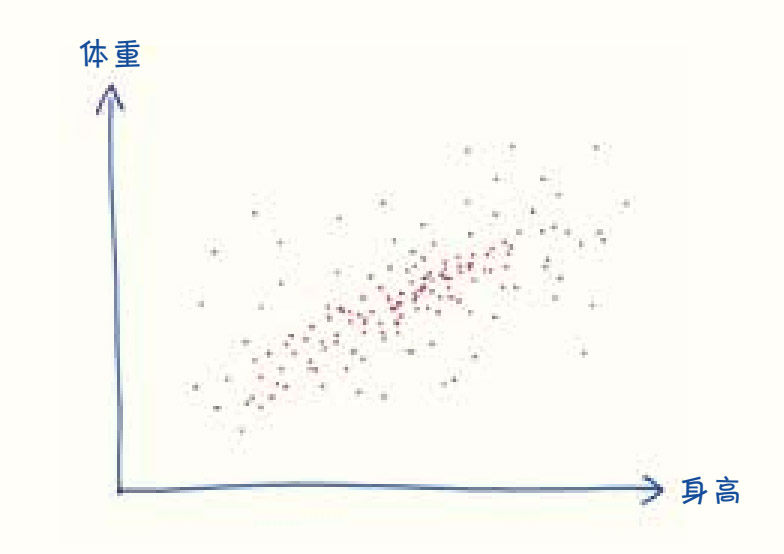
求出总体的平均身高和平均体重。
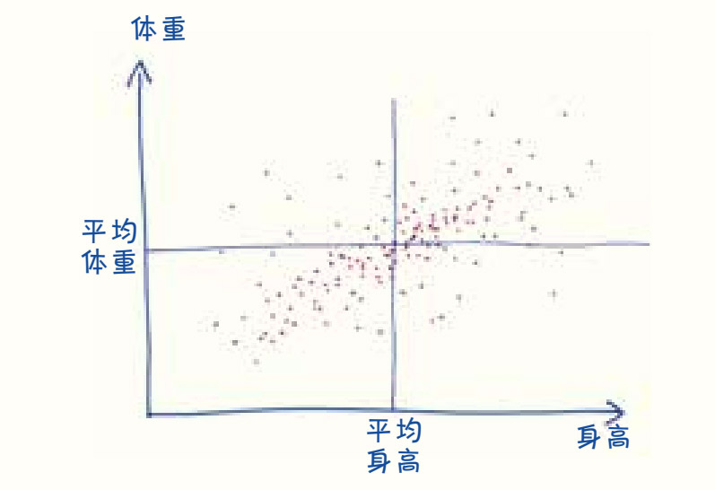
接下来，在图上选一个点（也就是一个人的数据）作为例子，这个人的身高和平均身高差多少？他的体重和平均体重差多少？如果“高于平均水平”，算作正数，如果“低于平均水平”，算作负数。
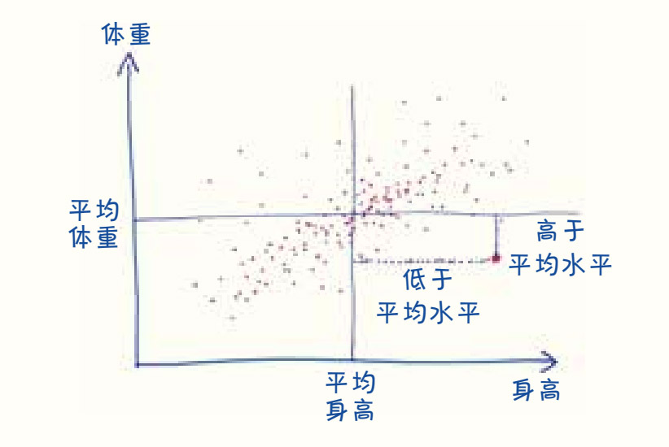
然后——这是关键的一步——将这两个值相乘。
如果这个人的身高和体重都高于平均水平，得到的结果将为正数，如果都低于平均值也是一样（因为负负得正）。但是如果它们一个高于平均值，另一个低于平均值，那么将得到一个负的结果（因为负数和正数的乘积为负）。
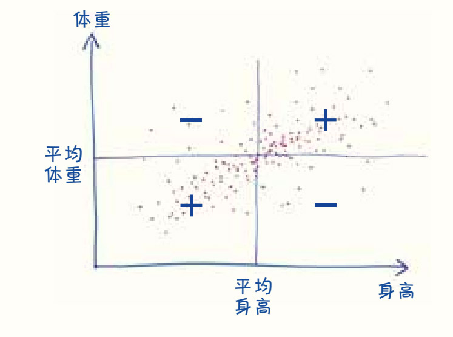
对图上的每个点都如法炮制，然后再求所有结果的平均值，最后得到的就是所谓的“协方差”（方差的近亲）。
马上就完成了！最后一步就是用这个数字进行除法，最终结果是在－1和1之间的一个数。
（用这个数除以什么呢？想一想方差的缺点：如果人们的体重和身高都很分散，那么“与平均值的差值”通常是一个很大的数字。然而，无论变量之间的关系如何，对于多变的变量，协方差较大，而对于稳定的变量，协方差较小。该怎么解决这个问题呢？就用协方差除以方差。）
好啦，现在到了简单的部分：解释这些值。
如果得到的是正值（如0.8），表示在一个变量上高于平均值（如身高）的人通常在另一个变量上也高于平均值（如体重）；如果得到的是负值（如－0.8），则表示情况相反，高的人更轻，而矮的人更重；如果得到的值接近于0，表明体重和身高之间根本没有任何有意义的关系。
1. 引自《国家棒球名人堂》（National Baseball Hall of Fame）中的《亨利·查德威克》：“他说，棒球运动中的每一个动作都像飞翔的海鸥一样快。”（http://baseballhall.org/hof/chadwick-henry）但我的朋友本·米勒（Ben Miller）提出了一个疑问：是非洲的海鸥还是欧洲的海鸥？
2. 这一纪录属于西印度群岛的击球手布莱恩·劳拉（Brian Lara），他在2004年对阵英格兰的比赛中一次都没有出局，正好得了400分。
3. 引自Moneyball: The Art of Winning an Unfair Game, New York: W. W. Norton, 2003 （中文版：《魔球: 如何赢得不公平竞争的艺术》，［美］迈克尔·刘易斯著，小草译，江西人民出版社，2018年）毫无疑问，这本书给了这一章巨大的帮助，如果你觉得关于棒球统计数据的故事还过得去（更别说有趣了），那么你会喜欢这本书的。
4. 以一个赛季38场比赛的英超为例。每场比赛90分钟，加上10分钟的补时时间，总共是3800分钟。每分钟要有12个数据点（每5秒1次），才能得到45 600个数据点，虽然比棒球赛季48 000个数据点还少，但已经足够接近了。
5. 欧内斯特·海明威的《老人与海》1952年9月1日发表于《生活》杂志。标题上方写着：“让编辑们非常自豪的是，《生活》杂志首次完整地刊登了一位伟大的美国作家的一本伟大的新书。”
6. 布兰奇·里奇1954年8月2日在《生活》杂志上发表了这篇文章，副标题是“比赛中的智慧揭示了一个从数据上反驳了人们珍视的神话、证明了决定输赢的真正因素的公式”。
7. E.米克利希（E. Miklich），《19世纪棒球规则演变》（Evolution of 19th Century Baseball Rules），19cBaseball.com，http://www.19cbaseball.com/rules.html。
8. 人们花了很长时间才决定了能够保送的坏球个数，最初是3个，然后是9个，然后是8个，然后是6个，然后是7个，然后是5个，直到1889年，这个数字才最终确定为4个。
9. 即使到那时，专栏作者们也没有完全接受它们。听听体育记者弗朗西斯·里希特（Francis Richter）是怎么说的：
这些（保送的）数据没有特别的价值或重要性……棒球上的垒只由投手负责，击球手无法控制，所以没法反映他的个人表现，除非它们能够以一种模糊的方式表明他有能力“控制”投手。
资料来源：比尔·詹姆斯（Bill James），《比尔·詹姆斯的新版棒球摘要》（The New Bill James Historical Baseball Abstract），纽约：自由出版社（New York: Free Press，2001），第104页。
10. 例如，2017年棒球联盟的领军人物是乔伊·沃托（Joey Votto），他在707次打数中有134次是保送，比例为19%。
11. 2017年，阿尔喀德斯·埃斯科瓦尔（Alcides Escobar）在629次打数有15次是保送，比例为2.4%。蒂姆·安德森（Tim Anderson）比他还夸张，在606次打数只有13次保送，占2.1%。
12. 作为一名数学老师，我一直很讨厌这个烂数据，每当有人将两个分母不同的分数相加时，我都会气得吐血。我一直希望他们能创造一个新的统计数字，比如“每次击打获得的垒数”——类似SLG，只是把保送和一垒安打等同计算。但在写这一章时，我意识到了自己的愚蠢：虽然这个新统计数据在概念上更清晰，但实际上预测能力会更差。在2017年的数据中，它与球队得分的相关性为0.873，比OBP还要糟。
13. 艾伦·施瓦兹（Alan Schwarz），“平均打击率之外”（Looking Beyond Batting Average），《纽约时报》，2004年8月1日，http://www.nytimes.com/2004/08/01/sports/keeping-score-looking-beyond-batting-average.html。
14. 比如：“‘我想带伟大的迪马吉奥（DiMaggio，与美国传奇棒球运动员乔·迪马吉奥同名）去钓鱼，’老人说，‘听说他父亲是个渔夫。’”
15. 斯科特·格雷（Scott Gray），《比尔·詹姆斯：改变棒球的局外人》（The Mind of Bill James: How a Complete Outsider Changed Baseball），纽约：三河出版社（New York: Three Rivers Press），2006年。这本书中有一些比尔·詹姆斯的名言任君选择，包括：“总会有人（的数据）在曲线的前面，也总会有人（的数据）落在曲线的后面。但是知识推动了曲线。”还有：“当你在讨论中加入确凿的事实时，它会对讨论产生深远的影响。”
16. 然而，直到20世纪70年代，美国职业棒球联盟的官方统计数据都是根据球队的平均打击率而不是得分来计算进攻次数的。“其实很明显，”詹姆斯打趣道，“进攻的目的不是制造高的打击率。”
17. 美国棒球研究协会迈克尔·豪波特（Michael Haupert），《1874年以来职业棒球大联盟年薪》（MLB's Annual Salary Leaders Since 1874），线外（Outside the Lines）栏目，2012年秋季，http://sabr.org/research/mlbs-annual-salary-leaders-1874-2012。因为没有考虑通货膨胀，图上数据和实际情况出入较大，例如，1951年乔·迪马吉奥的9万美元年薪，按2017年的美元计算应该更接近80万美元。不过即便如此，自由代理的影响还是不容置疑的。
18. 皮特·帕尔默（Pete Palmer），《2006 ESPN棒球百科全书》（The 2006 ESPN Baseball Encyclopedia），纽约：斯特灵出版社（New York: Sterling）， 2006年，第5页。
19. 美国棒球研究协会比尔·诺林（Bill Nowlin），“泰德·威廉姆斯成为最后一个0.400打击率棒球运动员的那天”（The Day Ted Williams Became the Last .400 Hitter in Baseball），《美国国球》（The National Pastime），2013年，https://sabr.org/research/day-ted-williams-became-last-400-hitter-baseball。
20. 本·米勒（一位烹饪界的奇才，不可救药的芝加哥白袜队球迷）指出，威廉姆斯的成功远远超过了这个数字。1941年，他“拥有0.553的OBP，这是60多年来单赛季的纪录……此外，泰德·威廉姆斯职业生涯的OBP为0.482，是有史以来最高的。哦，还有，泰德·威廉姆斯职业生涯的平均打击率为0.344，是史上第六高的。而下一个在1940年后打击率这么高的球员，已经是排名第17的托尼·格温（Tony Gwynn）了。不管从哪个角度来看，威廉姆斯都是最棒的”。
21. 比尔·彭宁顿（Bill Pennington），“泰德·威廉姆斯的0.406打击率：不止数字”（Ted Williams's 0.406 Is More Than a Number），《纽约时报》，2011年9月17日，http://www.nytimes.com/2011/09/18/sports/baseball/ted-williamss-406-average-is-more-than-a-number.html。
1. 2011年，一篇被广泛引用的论文证明了标准统计方法的危险性，论证过程中标准统计方法得出了这样一个荒谬的结论：听披头士乐队的歌曲《当我64岁时》（When I'm Sixty Four）会让学生更年轻——不是指他们感觉到自己更年轻，而是事实上让他们变得更年轻——至少统计数据是这样说的。这篇论文写得毫无章法，又让人拍案叫绝，值得一读：约瑟夫·西蒙斯（Joseph Simmons），列夫·D.纳尔逊（Leif D. Nelson）和尤里·西蒙逊（Uri Simonsohn），“伪积极心理学：数据收集和分析中隐藏的灵活性使任何重要的东西都能呈现”（False-Positive Psychology: Undisclosed Flexibility in Data Collection and Analysis Allows Presenting Anything as Signi@cant），《心理科学期刊》（Psychological Science）， http://journals.sagepub.com/doi/abs/10.1177/0956797611417632。而在科学新闻方面，我推荐：丹尼尔·恩贝（Daniel Engber），“达里尔·贝姆证明超能力真实存在：科学崩溃”（Daryl Bem Proved ESP Is Real: Which Means Science Is Broken），《石板》，2017年5月17日，https://slate.com/health-and-science/2017/06/daryl-bem-proved-esp-is-real-showed-science-is-broken.html。我还要感谢克里斯汀娜·奥尔森（Kristina Olson）（一日为师，终身为师），西敏·瓦兹尔（Simine Vazir）（她在截稿前17秒给出了反馈），以及桑杰·斯利瓦斯塔瓦（Sanjay Srivastava）（我在本章末尾引用了他的话）在这一章的帮助和鼓励。
2. p值是在实验假设为真时，至少达到这个极端结果的概率。
或者，再说得详细一些：
（1）假设我们只是误把偶然当成了必然，巧克力并不能让人更快乐。
（2） 设想一下我们的实验可能得到的所有结果的分布。这些结果中大多数都在中间，不太显眼，不太可能欺骗我们。但少数几个偶然的结果看起来好像巧克力能提升幸福感。
（3）在这个分布图中为我们的实际结果找到一个百分位排名。
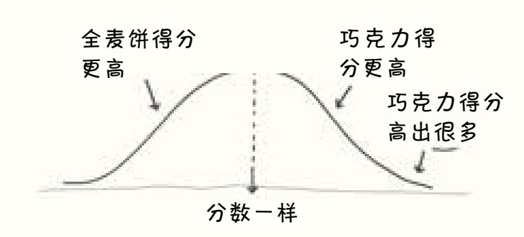
低分（例如0.03分，或第97百分位）意味着这是显著的偶然事件，只有3%的错误结果如此令人惊讶和具有欺骗性，而这3%的极端情况表明——或许这根本不是侥幸，说不定我们追求的巧克力的效果真实存在。
关键是，这些证据是间接的。那3%不是偶然事件发生的概率。而是假设结果是假的，你会侥幸得到这么有说服力的结果的概率。
3. 杰拉德·E.达拉勒（Gerard E. Dallal），《为什么P=0.05？》（Why P=0.05?）， 2012年5月22日，http://www.jerrydallal.com/lhsp/p05.htm。
4. 克里斯汀娜·奥尔森等，“孩子们对幸运者和不幸者以及他们的社会群体的偏见评价”（Children's Biased Evaluations of Lucky Versus Unlucky People and Their Social Groups），《心理科学期刊》，2006年第10期，845—846页，http://journals.sagepub.com/doi/abs/10.1111/j.1467-9280.2006.01792.x#articleCitationDownloadContainer。
5. 克里斯蒂娜·奥尔森等，“跨越发展和文化的幸运判断”（Judgments of the Lucky Across Development and Culture），《人格与社会心理学》（Journal of Personality and Social Psychology），2008年第94卷第5期，757—776页。
6. 本·奥尔林，《得到与未得到：孩子们会给幸运的人更多吗？》（Haves and Have Nots: Do Children Give More to the Lucky Than the Unlucky?），耶鲁大学心理学毕业论文，2009年。指导教师：克里斯汀娜·奥尔森，这篇论文的所有优点都应归功于她，所有缺点都与她无关。
7. 我的假设是8岁的孩子会对发生过的事情比较敏感，就会把玩具给不幸失去玩具的同学，但当他们经历过某些小小的坏运气（被分配到和不喜欢的同学玩游戏）时，他们就不会这么做了。而5岁的孩子遇到类似的事情时则不会那么敏感。本实验的p值为0.15。
然而，当向受试者问的是“喜欢”而不是“给予”时，我的数据和克里斯汀娜的结果完全一致，受试者更喜欢幸运的孩子（p = 0.029）。
8. 强烈推荐：http://www.tylervigen.com/。
9. 莱斯利·约翰（Leslie John）、乔治·勒温施泰因（George Loewenstein）和德雷真·普雷莱茨（Drazen Prelec），“用说实话的动机来衡量可疑研究实践的普遍程度”（Measuring the Prevalence of Questionable Research Practices with Incentives for Truth Telling），《心理科学期刊》，2012年第23卷第5期，524—532页，http://citeseerx.ist.psu.edu/viewdoc/download?doi=10.1.1.727.5139&rep=rep1&type=pdf。
10. 这个比较有点儿不公平，因为即使是一个p值操控者也不至于回到过去，在p值最小的时候“停止”研究。事实上，在每个受试者完成实验后检查数据的想法也是可疑的。
为了测试结果更贴近实际，我切回到电子表格，模拟了另外50个受试者。这一次，我从30个受试者（每组10个）开始，然后根据需要添加更多的受试者，每次添加15个（每组5个），最多添加90个。有了这种额外的自由度之后，76%（令人震惊的数字）的试验的p值都可以低于0.05。其中一次试验的p值低至了0.000 01，这是十万里挑一的荒谬事件。
11. 第一次听到这个方法时，我觉得它太蠢了。就好像：“我们的过山车是为4英尺及以上身高的人设计的，但既然孩子们都穿着风衣、骑在小伙伴的肩膀上，假装大人偷偷溜进去，那我们就把准入门槛提高到5英尺吧。” 但后来我看了一篇相关的文章：丹尼尔·J.本杰明等（Daniel J. Benjamin et al.），《重新定义统计学意义》（Redefine Statistical Significance），PsyArXiv网站，2017年7月22日， https://psyarxiv.com/mky9j/。我被说服了。从0.05下降到0.005似乎更符合直观的贝叶斯阈值，并且只需要适度增加样本量，就可以减少假阳性结果。
此外，还要注意的是，贝叶斯派比我在这一章中描述的更为敏锐和复杂。关于“什么应该先验”的问题，可以通过对各种实验进行大量分析，并做出总体趋势图来回避。然而，桑杰·斯里瓦斯塔瓦告诉我，投靠贝叶斯主义并不能从根源上解决实验复制危机——尽管从某种意义上来说，这可能是个好主意。
12. 开放科学协作组织（Open Science Collaboration），“对心理学再现性的估算”（Estimating the Reproducibility of Psychological Science），《科学》，2015年第6251卷第349期，http://science.sciencemag.org/content/349/6251/aac4716。
1. 杰伊·马修斯，《不止在讲台前传授知识，詹姆·埃斯卡兰特永远地改变了美国学校》（Jaime Escalante Didn't Just Stand and Deliver. He Changed U.S. Schools Forever），《华盛顿邮报》，2010年4月4日，http://www.washingtonpost.com/wp-dyn/content/article/2010/04/02/AR2010040201518.html。
2. “邮件点名”（Mail Call），《新闻周刊》，2003年6月15日，http://www.newsweek. com/mail-call-137691。
3. 杰伊·马修斯，“排名背后：我们如何列出榜单”（Behind the Rankings: How We Build the List），《新闻周刊》，2009年6月7日，http://www.newsweek.com/behind-rankings-how-we-build-list-80725。
4. Tim Harford, Messy: How to Be Creative and Resilient in a Tidy-Minded World (London: Little, Brown, 2016),171–173.（中文版：《混乱：如何成为失控时代的掌控者》，［英］蒂姆·哈福德著，侯奕茜译，中信出版社，2018年。）
5. 这是真事。Cathy O'Neil, Weapons of Math Destruction: How Big Data Increases Inequality (New York: Broadway Books, 2016),135–140.（中文版：《算法霸权：数学杀伤性武器的威胁与不公》，［美］凯茜·奥尼尔著，马青玲译，中信出版社， 2018年）。
6. 杰伊·马修斯，“挑战指数：为美国高中排名的原因”（The Challenge Index: Why We Rank America's High Schools），《华盛顿邮报》，2008年5月18日，http://www.washingtonpost.com/wp-dyn/content/article/2008/05/15/AR2008051502741.html。
7. 我从7岁起就一直在看橄榄球比赛，但从来没有理解过传球者评分。我想是时候试一试了。
我花了几分钟才展开这个公式，但展开后，我发现它并不那么复杂。首先，分配分数（每码1分，每完成一次传球得20分，每次触地得80分，每次被拦截减100分）。然后，计算每次传球尝试的分数。最后，再进行一个毫无意义的加法或乘法。用公式表达如下：
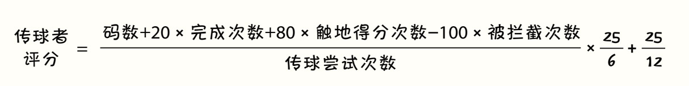
分解到这里就好……不过这个公式可能会得到负分数（如果拦截次数过多），也可能得到不可企及的最大值（然而实际上已经有60多位四分卫在比赛中达到了最大值158
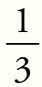
）。要解决这个问题，就需要为每一部分数据设置上限，因此在正文中的公式使用起来更容易一些。8. 杰伊·马修斯，《排名背后：我们如何列出榜单》。
9. 美国国家研究委员会，J.P.格勒布等（J. P. Gollub et al.），“AP和IB的使用、误用和意外后果”（Uses，Misuses，and Unintended Consequences of AP and IB），《学习和理解：改善美国高中数学科学预修学习》（Learning and Understanding: Improving Advanced Study of Mathematics and Science in U.S. High Schools），华盛顿，哥伦比亚特区：国家科学院出版社（Washington， DC: National Academy Press）， 2002年，187页，https://www.nap.edu/read/10129/chapter/12#187。
10. 史蒂夫·法尔卡斯（Steve Farkas）和安·杜菲特（Ann Duffett），《大学预修课程中的成长烦恼：摆在面前的是艰难权衡吗？》（Growing Pains in the Advanced Placement Program: Do Tough Trade-Offs Lie Ahead?），托马斯·B.福德姆研究所（Thomas B. Fordham Institute），2009年，http://www.edexcellencemedia.net/publications/2009/200904_growingpainsintheadvanced placementprogram/AP_Report.pdf. 根据这项调查，全国超过五分之一的AP教师认为，挑战指数对他们学校的AP课程有“一定影响”。在郊区和城市，这个数字接近三分之一。与此同时，只有17%的人认为这是个“好主意”。
11. 瓦莱丽·施特劳斯，“对杰伊的‘挑战指数’发起挑战”（Challenging Jay's Challenge Index），《华盛顿邮报》，2010年2月1日，http://voices.washingtonpost.com/answer-sheet/high-school/challenged-by-jays-challenge-i.html。2006年，挑战指数将佛罗里达州盖恩斯维尔（Gainesville，Florida）的东区高中列为美国排名第6的学校。但在该高中近600名非裔美国学生中，只有13%的学生的阅读达到了相应的年级水平。排名第21和第38的学校也表现出类似的不协调。批评人士认为，这是一个信号，表明有很多没有做好准备的学生被强行塞进大学水平的课程，以吸引《新闻周刊》的眼球。资料来源：迈克尔·瓦恩利普（Michael Winerip），“‘最佳高中’排行榜上的怪异数学”（Odd Math for ‘Best High Schools' List），《纽约时报》，2006年5月17日，http://www.nytimes.com/2006/05/17/education/17education.html。
12. 约翰·提尔内（John Tierney），“为何高中排名无意义且有害”（Why High-School Rankings Are Meaningless—and Harmful），《大西洋月刊》，2013年5月28日，https://www.theatlantic.com/national/archive/2013/05/why-high-school-rankings-are-meaningless-and-harmful/276122/。
13. 杰伊·马修斯，“排名背后：我们如何列出榜单”。
14. 杰伊·马修斯，“我搞错了，不过一位聪明的教育学家像往常一样救了我”（I Goofed. But as Usual， a Smart Educator Saved Me），《华盛顿邮报》，2017年6月25日，https://www.washingtonpost.com/local/education/i-goofed-but-as-usual-a-smart-educator-saved-me/2017/06/25/7c6a05d6-582e-11e7-a204-ad706461fa4f_story.html。
15. 迈克尔·瓦恩利普，“‘最佳高中’排行榜上的怪异数学”。
16. 杰伊·马修斯，“美国最具挑战性的高中：一个持续发展30年的计划”（America's Most Challenging High Schools: A 30-Year Project That Keeps Growing），《华盛顿邮报》，2017年5月3日，https://www.washingtonpost.com/local/education/jays-americas-most-challenging-high-schools-main-column/2017/05/03/eebf0288-2617-11e7-a1b3-fa%0034e2de_story.html。
17. 并不是所有学者都同意这个观点，2010年《AP：预修课程的关键考试》（AP: A Critical Examination of the Advanced Placement Program）中提出，研究人员已经达成共识，AP考试的热潮已经开始衰退。编者菲利普·萨德勒（Philip Sadler）说：“AP课程并不能凭空为那些准备不足的学生带来优势，那些学生可能更适合学习一门不是以获得大学学分为目的的课程。”资料来源：丽贝卡·R.赫什（Rebecca R. Hersher），“AP考试的疑问性发展”（The Problematic Growth of AP Testing），《哈佛大学报》（Harvard Gazette），2010年9月3日，https://news. harvard.edu/gazette/story/2010/09/philip-sadler/。
18. 杰伊·马修斯，“美国最具挑战性的高中：一个持续发展30年的计划”。
19. 杰伊·马修斯，“挑战指数：为美国高中排名的原因”。
20. 我给马修斯一个小小的建议：与其计算“参加考试次数”，不如计算“至少得到2分的考试次数”。根据我的经验（以及马修斯喜欢引用的那份得州的研究），2分意味着一定的智力水平，是进步的信号。但我不太相信一个得1分的考生能在这门课中学到什么，这样设置最低分的门槛后，将让完全没有准备好的孩子打消参加考试的想法。
1. 中文版：杜森译，北京联合出版公司，2019年。
2. 我根据Goodreads网站的数据中对“伟大”进行了评估。在Goodreads上，读者给出的评分从1星到5星不等。首先，我计算了每本书获得的星星总数。福克纳的作品从1 500颗星（《塔门》）到50万颗星（《喧哗与骚动》）不等。然后我取星星颗数的对数，把这个指标分解成线性的，并算出副词与“伟大”的相关系数为-0.825。我对海明威和斯坦贝克的作品也进行了相同的分析，得出的系数分别为-0.325和-0.433：的确有区别，但它们的区别在图表上很难分辨。副词数据来自布拉特，这个方法也是在布拉特方法的基础上设计的（他没有用星星的数量来评分，用的是数字等级，但结果和我的几乎相同）。
3. 让-巴蒂斯特·米歇尔等，“通过数百万本数字化书籍对文化进行的定量分析”，《科学》，2011年第6014卷第331期，176—182页，http://science.sciencemag.org/content/early/2010/12/15/science.1199644。他们写道：
语料库是不可能由人阅读的。就算你只读2000年这一年的语料，以每分钟200字的合理速度，不吃不睡不休息，也需要读80年的时间。整个字母的序列比人类基因组长1000倍，如果把它写在一条直线上，这条直线的长度是地球和月亮往返距离的10倍。
4. 派特丽夏·科恩（Patricia Cohen），“五千亿词，崭新的文化之窗”（In 500 Billion Words, New Window on Culture），《纽约时报》，2010年12月16日，http://www.nytimes.com/2010/12/17/books/17words.html。
5. 米歇尔和艾登写道（我加上了强调语气）：
通过阅读精心挑选的作品集，学者们能够推断出人类思维的趋势，但是这种方法很少能够精确测量潜在的思维。
6. 弗吉尼亚·伍尔芙，《一间自己的房间》，1929年。
7. 你可以在网上试试：https://applymagicsauce.com/。
8. 请见http://mathwithbaddrawings.com/。
9. 摩西·科佩尔（Moshe Koppel）、什洛莫·阿加蒙（Shlomo Argamon）和阿纳特·蕾切尔·西莫尼（Anat Rachel Shimoni），“按作者性别对文本自动进行分类”，《文学与计算机语言学》（Literary and Linguistic Computing），2001年第17卷第4期，401—412页，http://u.cs.biu.ac.il/~koppel/papers/male-female-llc-final.pdf。
10. 什洛莫·阿加蒙等，“正式书面文本中的性别、体裁和写作风格”，《文本》（Text），2003年第23卷第3期，321—346页，https://www.degruyter.com/view/j/text.1.2003.23.issue-3/text.2003.014/text.2003.014.xml。
11. 布拉特，《纳博科夫最喜欢的词》，原书37页。
12. 贾斯汀·特努透（Justin Tenuto），《利用机器学习来预测性别》（Using Machine Learning to Predict Gender），CrowdFlower网站，2015年11月6日，https://www.crowdflower.com/using-machine-learning-to-predict-gender/。
13. 布拉特，《纳博科夫最喜欢的词》，原书36页。
14. 凯茜·奥尼尔，《算法可能对女性非常粗暴》（Algorithms Can Be Pretty Crude Toward Women），彭博社（Bloomberg），https://www.bloomberg.com/view/articles/2017-03-24/algorithms-can-be-pretty-crude-toward-women。
15. 在《一间自己的房间》中，伍尔芙写道：
男人写作的力度、步伐和节奏都和女人的太不一样了，她无法从他身上提取出任何实质性的东西……也许她发现的第一件事，就是落笔时，没有一个常见的句子可用。
虽然她喜欢那种男性化的风格（简洁干净，有表现力但不造作），她补充说：“但她笔下的句子还是不适合女性使用。”
夏洛蒂·勃朗特虽然有散文方面的天赋，却被手中笨拙的武器绊了一跤……简·奥斯汀看着这个现状，笑了笑，设计出了一套非常自然、优美、适合自己使用的句子，再也没有更换过。因此，虽然她的写作天赋不如夏洛蒂·勃朗特，但她表达得却更多。
16. 弗雷德里克·莫斯塔勒和戴维·华莱士，《作者身份问题中的推理》（Inference in an Authorship Problem），《美国统计协会杂志》（Journal of the American Statistical Association），1963年第58卷第302期，275—309页。
17. 我说的就是字面意思，布拉特写道：
他们把每一篇文章都复印下来剪开，把每个单词拆开后（手动）按字母顺序排列。莫斯塔勒和华莱士一度写道:“在这个过程中，一次深呼吸就能引发一场纸屑风暴，带来一个永远的敌人。”
我差点把这一章命名为“纸屑风暴和永远的敌人”。
18. 斯坦福文学实验室，莎拉·艾莉森（Sarah Allison）等，《定量形式主义：一项实验》（Quantitative Formalism: An Experiment），2011年1月15日，https://litlab.stanford.edu/LiteraryLabPamphlet1.pdf。我非常喜欢这篇论文。事实上，我推荐我读过的斯坦福文学实验室的每一篇文章，它们就像皮克斯的经典动画片——从不会踩到雷区。
1. 托马斯·爱迪生曾经说过：“我已经构建了3 000种与电灯有关的理论，每一种都合情合理，而且看上去显然是正确的。然而，只有其中的两种理论被实验证明是正确的。”显然，“理论”和“设计尝试”不是一回事，没有人知道他在成功之前尝试过多少次。资料来源：“神话终结者：爱迪生的10 000次尝试”（Myth Buster: Edison's 10 000 Attempts），《爱迪生》（Edisonian），2012年秋季，http://edison.rutgers.edu/newsletter9.html#4。
2. 如果你同时进行多个交易，这个规则也是可以改变的。比如10万支铅笔的售价为50 438.71美元，那就相当于每支铅笔的售价为0.504 387 1美元。那些每天进行大量交易的金融机构，交易的金额常常有很多位小数。
1. 实际上，他并不是将此作为问题而提出的，他说的是：
没什么东西比水更有用；能用它交换的货物却非常有限；很少的东西就可以换到水。相反，钻石没有什么用处，但可以用它换来大量的货品。
来源：亚当·斯密，《国富论》，原书第一部，第四章，第13段，可以在电子图书馆看到原文：http://www.econlib.org/library/Smith/smWN.html。
2. 这一章的重要参考资料：安格那·桑德莫（Agnar Sandmo），《经济进化：经济思想史》（Economics Evolving: A History of Economic Thought），新泽西普林斯顿：普林斯顿大学出版社（Princeton， NJ: Princeton University Press），2011年。
3. 坎贝尔·麦康奈尔（Campbell McConnell）、斯坦利·布鲁（Stanley Brue）和肖恩·福林（Sean Flynn），《经济学：原理、问题和政策（第19版）》（Economics: Principles, Problems, and Policies, 19th ed），纽约：麦格劳－希尔·埃尔文出版社（New York: McGraw-Hill Irwin），2011年。“土地的生产力”的例子来自7.1节“收益递减定律”。
4. 正如迈克·桑顿所指出的——非常感谢他在这一章中的帮助——这个类比忽略了一些细节。条件不同的土地可以种植各种适合不同条件的作物，农民可以采取措施（如轮作）来改善土壤质量。
5. 威廉姆·斯坦利·杰文斯（William Stanley Jevons），“政治经济学中一般数学理论简述”（Brief Account of a General Mathematical Theory of Political Economy），《英国皇家统计学会》期刊（Journal of the Royal Statistical Society），伦敦第29期，1866年6月，282—287页，https://socialsciences.mcmaster.ca/econ/ugcm/3ll3/jevons/mathem.txt。
6. 屡出金句的杰文斯，这一章写下来，我成了他的粉丝。
7. 为了复习和更新这一知识点，我参考了华沙大学经济学助理教授迈克尔·布热津斯基（Michal Brzezinski）的课件，http://coin.wne.uw.edu.pl/mbrzezinski/teaching/HEeng/Slides/marginalism.pdf。
8. 引自约拉姆·鲍曼的视频“Mankiw's Ten Principles of Economics，Translated”，我在大学里第一次看到这个视频时，笑得停不下来，http://standupeconomist.com/.
9. 桑德莫，《经济进化：经济思想史》，原书第96页。
10. 桑德莫，《经济进化：经济思想史》，原书第194页。
11. 引用自维基百科，嘘，别告诉其他人。
12. 杰文斯的做法也体现了这一趋势。他预测英国的煤炭资源将很快耗尽，并认为商业周期的起落与太阳黑子引起的低温有关。好吧，这两种观点他都错了，但我们知道这要归咎于他自己开创的方法。
瓦尔拉斯则恰恰相反，他有点儿反经验主义。在他看来，必须首先过滤现实中杂乱的细节，才能得到纯粹的量化概念。其次，必须对这些抽象的数学概念进行操作和推理。最后——几乎是事后才想到的——回顾一下实际的应用性。瓦尔拉斯写道：“回归现实不应该发生在科学完成之前。”对于瓦尔拉斯来说，“科学”发生在远离现实的地方。
如果你遇到一位至今仍持这种观点的经济学家，请遵循以下简单的步骤：（1）举起双臂；（2）开始咆哮；（3）如果经济学家继续接近你，就打他耳光。记住，这些经济学家和我们害怕他们一样害怕我们。
13. 这个观点直接来自桑德莫。
1. 我真不是在逗你。比利时最伟大的两位名人都是虚构的：赫尔克里·波洛（阿加莎·克里斯蒂系列侦探小说的主角）和丁丁（《丁丁历险记》的主人公）。个人观点，我认为这对比利时来说是件好事，历史名人不过是麻烦而已。
2. 关于美国税收历史的资料来源：W.艾略特·布朗利（W. Elliot Brownlee），《美国联邦税收史（第3版）》（Federal Taxation in America: A History, 3rd ed.），剑桥：剑桥大学出版社（Cambridge: Cambridge University Press），2016年。
3. 800美元的起征点与全国平均家庭收入900美元相当接近。因为政府是蒙着眼睛扔出那支射中起征点的飞镖的，非常令人印象深刻了。我还要指出的是，税收并没有真正的0%等级，只是所有人都享有800美元的免纳税额罢了，数学面前人人平等。
4. 布朗利，《美国联邦税收史（第3版）》，第92页。
5. 布朗利，《美国联邦税收史（第3版）》，第90页。
6. 数据来自维基百科“1918年税收法案”（Revenue Act of 1918）页面。
7. J. J.设计的系统需要微积分才能完成，可见他的水平已经超过了一般的微积分预科学生。他的系统（不同于我展示的那个简单系统）包含了几个离散的税率跃迁，因此顶层税收等级是不断变化的，公式中还包含一个自然对数。作为一名教师，为了让学生更好地掌握知识点，常常要进行简化；而对于J. J. 来说，情况似乎正好相反。
8. 《新精神》（The New Spirit），迪士尼电影公司，1942年。观看原版：https://www.youtube.com/watch?v=eMU-KGKK6q8。
9. 没错，《左轮手枪》就是最好的一张专辑，《橡胶灵魂》（Rubber Soul）的粉丝们，不服来辩。
10. 这相当于95%的边际税率，所以乔治·哈里森（George Harrison，披头士乐队成员之一）还是稍微低估了自己的税收负担。
11. 阿斯特丽德·林德格伦，《莫尼斯马尼亚的庞培里波萨》，《快报》，1976年3月3日，2009年英文译文链接：https://lenbilen.com/2012/01/24/pomperipossa-in-monismania/。
12. 《有影响力的公共舆论》（Influencing Public Opinion），阿斯特丽德·林德格伦个人网站AstridLindgren.se，http://www.astridlindgren.se/en/person/in$uencing-public-opinion。
13. 当然，这就是为社会保障和医疗保险提供资金的实际工资税的运作方式。你为你的第一个12万美元支付15%，而高于这个水平的收入部分就什么都不用付了。
1. 写完这句令人愉悦的话后，我遇到了它邪恶的孪生兄弟——我非常喜欢的作家豪尔赫·路易斯·博尔赫斯也曾讥讽民主是“对统计数据的滥用”。
2. 《联邦党人文集》第68篇，亚历山大·汉密尔顿著。当我提到这些深受爱戴的美国人物时，我要感谢杰夫·科思里格（Geo% Koslig）对这一章的帮助，他是一个天生的爱国者，他的大脑中有爱国歌曲作为背景音乐；以及杰里米·库恩（Jeremy Kun）和陈智（音译）的大力帮助。
3. 我的这条论证线和我所拥有宪法知识的93%一样，来自阿希尔·里德·阿玛尔（Akhil Reed Amar），尤其是他的这本书：《美国宪法传》（America's Constitution: A Biography），纽约：兰登书屋（New York: Random House），2005年，148—152页。图中的数据来自（没有悬念地又是）维基百科。
4. 这一观点来自阿玛尔《美国宪法传》的第155—159页和第342—347页。他进一步指出，选举人团制度不但给奴隶州带来了优势（这一点毋庸置疑），而且在一定程度上这就是制度设计的目的。这一立场招致了一些批评，包括加里·L.格雷格二世（Gary L. Gregg II）慷慨激昂的反驳：“不！选举人团制度与奴隶制无关！”资料来源：《法律与自由》（Law and Liberty），2017年1月3日，http://www.libertylawsite.org/2017/01/03/no-the-electoral-college-was-not-about-slavery/。
我的拙见：认为奴隶制是形成选举人团制度的唯一原因，那就太傻了，但我没见过有人这么说。在第155页，阿玛尔写的是：“三个主要因素——信息壁垒、联邦制和奴隶制度——注定了1787年的总统直接选举的失败。”即使在我这个外行看来，认为奴隶制与选举人团制度的形成无关，那也是大错特错。1787年7月19日，詹姆斯·麦迪逊提出了这个问题：
有一个问题……是人们的直接选择。北方各州比南方各州拥有更多的选举权（人口更多）；后者可能无法对选举争论的黑人问题产生影响。而替换选举人消除了这个困难……
7月25日，麦迪逊再次提出了这个观点——尽管这一次，他支持的是直接选举，他说，作为一个代表美国各州的人，他愿意做出牺牲。欲知详情，请阅读“关于联邦大会辩论的说明”，http://avalon.law.yale.edu/subject_menus/debcont.asp。更多的证据表明，选举人团制度为奴隶制带来的优势是刻意的，而不是一个漏洞：在1833年安德鲁·杰克逊的第一次就职演说中，这位南方人提议用直接选举取代选举人团制度，但前提是保留当前不规范的选票权重。资料来源：阿玛尔，《美国宪法传》，第347页。
5. 我从维基百科上获取了人口普查数据，然后按照各州自由人口的比例重新分配了众议院的代表人数。
6. 科思里格告诉我，“民主党=蓝色，共和党=红色”的配色方案曾经是反过来的。它转变于20世纪90年代，并在2000年最终确定。如果想了解更多细节，你可以阅读史密森尼学会的一篇有趣的文章：朱迪·恩达（Jodi Enda），《当蓝色代表共和党人，红色代表民主党人》（When Republicans Were Blue and Democrats Were Red），Smithsonian.com，2012年10月31日，https://www.smithsonianmag. com/history/when-republicans-were-blue-and-democrats。
7. 这也不像听起来那么简单。以2016年的选举为例，民主党得票率为46.44%，四舍五入后为50%（得到5个选举名额），共和党得票率为44.92%，四舍五入后为40%（得到4个选举名额）。合计只有9个。最后一个选举人名额给谁呢？你可以把它给自由党，但他们的得票率为3.84%，远低于10%，把最后一位选举人交给最接近获胜的政党可能更符合逻辑，因此，在这次选举中，共和党因为只差了0.08%而落败。
8. 正如科思里格所指出的，对于那些在总统选举中倾向于一个政党而在州政府中倾向于另一个政党的州，这种动态是不同的。近年来，一些这样的州考虑采用内布拉斯加州和缅因州的选举人分配方式，作为州政府执政党从竞争对手手中夺取部分选举人的一种方式。
有一个很好的方法来回答这个问题：内特·西尔弗（Nate Silver），《选举人团制度会让民主党再次遭殃吗？》（Will the Electoral College Doom the Democrats Again?），FiveThirtyEight网站，2016年11月14日，https://@vethirtyeight.com/features/will-the-electoral-college-doom-the-democrats-again/。
9. “有一次例外。”西尔弗指出：
那是在20世纪上半叶，当时共和党人一直拥有选举人团的优势，因为民主党人在南方赢得了巨大的优势，浪费了大量的选票……现在的问题是，民主党人是否正在重新进入类似于“南方稳蓝”时代的局面，除非他们的选票集中在城市沿海各州……
西尔弗的猜测似乎是“不”。但时间会证明的。
10. 这个计划是由阿希尔·里德·阿玛尔教授（他的课是我在大学里上过最棒的宪法法律课）和他的兄弟维克拉姆·阿玛尔（Vikram Amar）教授提出的。
1. 来自维基百科，当然。我还要感谢大卫·克隆普（David Klumpp）和华勒·冈纳森（Valur Gunnarsson）让我醍醐灌顶的反馈。
2. 这件逸事和接下来的图表，以及本章中大部分的数学故事都来自这本书：James Gleick, Chaos: Making a New Science (New York: Viking Press, 1987)（中文版：《混沌学：一门新学科》，［美］詹姆斯·格莱克著，张彦、宋永华、贾雷、陈健译，社会科学文献出版社，1991年）。这个故事在原书的第17—18页。
3. 好吧，17世纪还没有“米”这个单位，这个式子是用现代语言描述的，而且只适用于较小角度的摆动。不过，令人吃惊的是，钟摆的周期长度与角度无关：一个幅度大、速度快的振荡与一个幅度小、速度慢的振荡所需时间差不多。
4. 在这个网站可以看到很棒的模拟双摆，https://www.myphysicslab.com/pendulum/double-pendulum-en.html。说真的，如果你一直在浏览尾注，寻求一些未知的灵感，那么这里可能就有答案。
5. 西沃恩·罗伯茨，《天才游戏：约翰·霍顿·康威的奇思》（Genius at Play: The Curious Mind of John Horton Conway），纽约：布鲁姆斯伯里出版社（New York: Bloomsbury），2015年。在书中第ⅩⅣ页至第ⅩⅤ页，罗伯茨引用音乐家布莱恩·伊诺（Brian Eno）在“生命游戏”中的话：“整个系统都很透明，根本不应该有任何惊喜，但事实上却是惊喜连连：圆点图案进化的复杂性和‘组织性’完全无法预测。”在第160页，她引用了哲学家丹尼尔·丹尼特（Daniel Dennett）的话：“我认为生活应该是每个人工具箱里的一个思考工具。”
6. 阿莫斯·特沃斯基这段话来自：Michael Lewis, The Undoing Project: A Friendship That Changed Our Minds (New York: W. W. Norton, 2016), 101.（中文版：《思维的发现：关于决策与判断的科学》，［美］迈克尔·刘易斯著，钟莉婷译，中信出版社，2018年）。
7. 《幸运的一击》出版于1984年，我读的版本收录于：哈利·特特尔多夫（Harry Turtledove），《20世纪最佳架空历史小说》（The Best Alternate History Stories of the 20th Century），纽约：兰登书屋，2002年。
此外，我不禁要在这里推荐我最喜欢的历史小说：奥森·斯科特·卡德（Orson Scott Card），《历史记录：哥伦布的救赎》（Pastwatch: The Redemption of Christopher Columbus），纽约：托尔出版公司（New York: Tor Books），1996年。
8. 大井真理子（Mariko Oi），《从原子弹下拯救京都的人》（The Man Who Saved Kyoto from the Atomic Bomb），BBC新闻，2015年8月9日，http://www.bbc. com/news/world-asia-33755182。
9. 很难想象杜鲁门不明白这一点，但他似乎确实不明白。详情请听“Radiolab”电台精彩的一集——《核武器》（Nukes）（2017年4月7日），http://www.radiolab. org/story/nukes。
10. 在1931年的文章《如果罗伯特·李没有赢得葛底斯堡战役》中，丘吉尔假装自己是生活在另一个时间轴上的历史学家，而且南方联盟取得了胜利，然后他写了一个“架空”小说，想象我们的时间轴上的生活是什么样的。我觉得他的结论愚蠢又天真，但话说回来，我从未从纳粹手中拯救过人类，所以也没必要听我的。https://www.winstonchurchill.org/publications/finest-hour-extras/qif-lee-had-not-won-the-battle-of-gettysburgq/。
11. 塔那西斯·科茨，“败局命定再现”（The Lost Cause Rides Again），《大西洋月刊》， 2017年8月4日，https://www.theatlantic.com/entertainment/archive/2017/08/no-confederate/535512/。
12. 这个话题的部分灵感来自迈克尔·刘易斯的《思维的发现：关于决策与判断的科学》，原书第299—305页。
13. 混沌理论的一个重要观点是，许多高度复杂的系统遵循简单的基本规则。也许——在这里，我就是在胡思乱想——有一种方法可以找到历史（某些方面）的一些决定性规则。我们或许可以通过开发玩具模型来捕捉历史的敏感性和随机性，就像爱德华·洛伦兹对天气的模拟那样。
14. 贝努瓦·曼德尔布罗特，“英国海岸线有多长：统计学的自相似性和分维”（How Long Is the Coast of Britain? Statistical Self-Similarity and Fractional Dimension），《科学》，1967年第156卷第3775期，636—638页。
15. 艾伦·摩尔和艾迪·坎贝尔，《来自地狱》（From Hell），玛丽埃塔，佐治亚：顶层出版社（Marietta， GA: Top Shelf Productions），1999年，附录Ⅱ，第23页。
16. 在厄休拉·勒古恩（Ursula Le Guin）的短篇科幻小说《平民之人》（A Man of the People）中，主人公试图了解一个名为海因（Hain）的文明漫长的历史：
他现在知道了，历史学家并不研究历史，也没有人的头脑能涵盖海因的历史：300万年……有无数的国王，帝国，发明，数十亿的人生活在数以百万计的国家，有君主制、民主制、寡头制……整个历史都是一片混乱，理不清的年代，万神殿里数不清的万神，战争与和平时期的交替反反复复无穷尽也，人们在不停地发现和忘记，反复经历恐怖和胜利，感受重复不断的新鲜感。为什么非要试图描述一条河在任何时刻的流动呢？这一时刻，下一时刻，然后再下一个，再下一个，无穷无尽的下一个？你已经筋疲力尽，只想说：有一条大河流经这片土地，我们把它命名为历史。
天知道我有多喜欢这篇小说。来源：厄休拉·勒古恩，《四种宽恕之道》（Four Ways to Forgiveness），纽约：哈珀-柯林斯出版集团（New York: Harper-Collins），1995年，第124—125页。
17. 这个好画面是从华勒·冈纳森（Valur Gunnarsson）那里偷来的。此外，在谈到相互竞争的历史比喻时，我还要再引用博尔赫斯的话：“普适的世界史可能是由好几个比喻构成的不同语调的历史。”